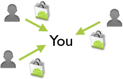

AppAware shares online your installations, updates and removals of Android applications. In this way you become aware (App-Aware) of what other users are installing on their phones right now or around you!

And if you like, you can even share automatically your installations, updates and removals on your Twitter account! (You can configure it from 'Menu > Settings')
AppAware does not aim at replacing the Android Market, it is rather a companion to let you discover new and interesting applications with the help of other users.
Remember to press the Menu button for more features and to long-press an application event to get more options.